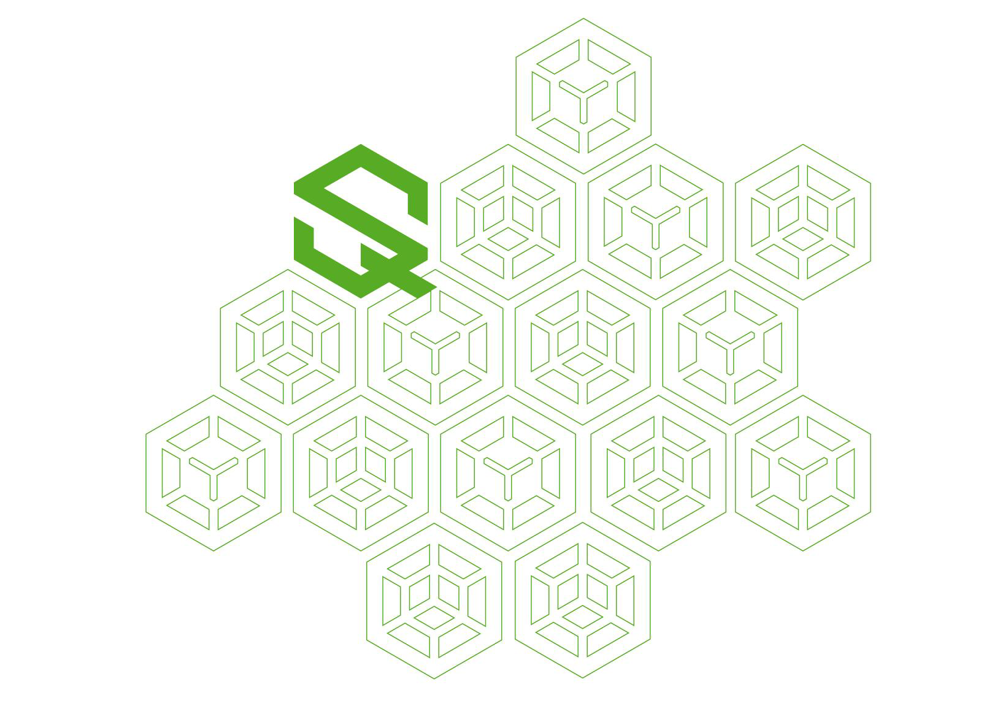

QUALITY AND SAFETY
LA DEMATERIALIZZAZIONE DOCUMENTALE UN’OPPORTUNITÀ DA COGLIERE CON IL PARTNER GIUSTO
L'informatizzazione e il trattamento elettronico dei documenti sono ormai una realtà, anche dal punto di vista legislativo.
Adeguarsi alle normative in materia appare di giorno in giorno non solo una necessità, ma anche un’occasione per rendere più pratico e tutelato il flusso delle informazioni e la loro archiviazione.
Capitalizzando le sue esperienze, Quality and Safety ha studiato e approfondito il tema della “Trasformazione del supporto cartaceo in modalità digitale”.
Da qui l’intuizione di divulgare e adattare questa nuova soluzione tecnologica anche in altri settori quali la Pubblica Amministrazione, le assicurazioni e gli studi legali e notarili.
Per questo si colloca a buon diritto tra i partner più efficienti per affrontare un passaggio che cambierà in meglio i processi produttivi, a patto che venga affrontato con strumenti semplici e affidabili.
Come quelli del progetto Mar.teTM, sviluppato interamente da Quality and Safety per offrire una gamma di applicativi e servizi per la certificazione documentale.

CERTEZZE BEN RIPOSTE
Dal 1994 è questa l'esperienza nell'information technology applicata alla sanità.
Una sensibilità professionale educata a interpretare le esigenze reali del settore.
Un know-how di alto profilo, orientato a sviluppare le soluzioni più efficienti per l’archiviazione elettronica dei documenti. Soprattutto, un’idea tecnologica in grado di cambiare radicalmente l’approccio alla tutela dei documenti stessi, nel momento in cui la loro “dematerializzazione” diventa una necessità.
Semplice, diretta ed efficace come solo le grandi soluzioni sanno essere. Quality and Safety nasce così. E offre i suoi servizi e le sue soluzioni a tutte le realtà che abbiano l’esigenza di archiviare e proteggere documenti secondo modalità giuridicamente riconosciute.
Un know-how di alto profilo, orientato a sviluppare le soluzioni più efficienti per l’archiviazione elettronica dei documenti. Soprattutto, un’idea tecnologica in grado di cambiare radicalmente l’approccio alla tutela dei documenti stessi, nel momento in cui la loro “dematerializzazione” diventa una necessità.
Semplice, diretta ed efficace come solo le grandi soluzioni sanno essere. Quality and Safety nasce così. E offre i suoi servizi e le sue soluzioni a tutte le realtà che abbiano l’esigenza di archiviare e proteggere documenti secondo modalità giuridicamente riconosciute.
AFFIDABILITÀ IN CRESCITA
Le origini del patrimonio di conoscenze e attitudini professionali confluite in Quality and Safety si trovano in una fruttuosa stagione di progettazione e realizzazione di sistemi informatici, in partnership con grandi multinazionali del settore.
Da queste collaborazioni è nata la specializzazione nella messa a punto di soluzioni gestionali del paziente in ambito radiologico, attraverso la confezione e gestione di impianti RIS-PACS.
Allo stesso tempo si sono approfondite competenze nell’ambito delle telecomunicazioni, del networking locale e distribuito e del sistemistico. I sistemi installati e implementati dal 1999 al 2007 nei dipartimenti di radiodiagnostica per immagini e numerosi centri ospedalieri del Nord Italia, gestiscono a tutt’oggi 3,5 milioni di prestazioni medico-sanitarie.
E rappresentano quell’esperienza sul campo che è la vera forza di Quality and Safety.